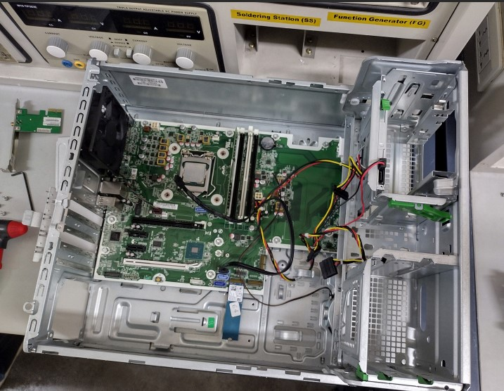

Sección: Prácticas de Laboratorio
Práctica 1: Reconocimiento de Componentes de Hardware
Análisis de la arquitectura física y componentes integrados en las tarjetas madres de los equipos de cómputo del laboratorio.

Figura: Tarjeta madre principal analizada en el equipo.
| Componente / Parámetro |
Especificación Técnica Detectada |
| Fabricante y Modelo | Intel Corporation (D865GLC / D865PESO) |
| Chipset | Intel 865G (Northbridge) / Intel ICH5 (Southbridge) |
| Socket de CPU | Socket 478 (Pentium 4 / Celeron) |
| Memoria RAM | DDR SDRAM (DDR1) | 4 ranuras DIMM | Soporta Dual Channel |
| Ranuras de Expansión | 1 ranura AGP 8X/4X y 3 ranuras PCI |
| Almacenamiento | 2 canales IDE (Ultra ATA) y 2 puertos SATA de 1ª Generación |
Comparativa de Arquitecturas (Equipos del Grupo)
| Placa / Fabricante |
Socket y Procesador |
Tipo de Memoria |
Almacenamiento |
| Mercury (Chipset VIA) | Socket 462 / AMD Athlon XP | DDR1 (2 DIMM) | 2 puertos IDE (PATA) |
| MSI GF615M-P31 | Socket AM3 / AMD Phenom II | DDR3 (2 DIMM) | Conectores SATA e IDE |
| Intel D525MW | Intel Atom D525 (Integrado) | DDR3 SO-DIMM | 2 puertos SATA |
Práctica 2: Identificación y Análisis de Procesadores
Inspección física y documental de diferentes microprocesadores para estudiar la evolución de núcleos, frecuencias, sockets y segmentos de mercado.
Tabla Resumen de Especificaciones de CPUs
| Procesador / Modelo |
Frecuencia (Velocidad) |
Caché L2 |
Bus (FSB) |
Socket |
| Intel Pentium Dual Core E2140 | 1.60 GHz | 1 MB | 800 MHz | LGA 775 |
| Intel Pentium 4 531 | 3.00 GHz | 1 MB | 800 MHz | LGA 775 |
| AMD Sempron 3000+ | 1.80 GHz | 256 KB | N/A | Socket 754 |
| Intel Xeon (Lote: 4637A274) | Servidor Profesional | Alta Densidad | Bus Especial | LGA Especial |
| Intel Celeron D 336 | 2.80 GHz | 256 KB | 533 MHz | LGA 775 |
| Intel Celeron 1100A (SL6RM) | 1.10 GHz | 256 KB | 100 MHz | Socket 370 |
Detalles de la Arquitectura de cada CPU
Intel Pentium Dual Core E2140
Procesador con arquitectura de doble núcleo, lanzado en la transición hacia la era Core 2 Duo. Ofrece mejoras de multitarea eficientes.
Intel Pentium 4 531
Un modelo clásico de un solo núcleo fundamentado en la arquitectura NetBurst de Intel con alta frecuencia base (3.00 GHz).
AMD Sempron 3000+
Procesador de entrada de AMD diseñado como opción económica utilizando empaque físico de pines Socket 754.
Intel Xeon (Profesional)
Unidad de procesamiento diseñada para servidores con alta tolerancia a fallos y compatibilidad con memorias ECC.
Práctica 3: Caracterización de Módulos de Memoria RAM
Análisis técnico detallado de módulos de memoria de alta velocidad DDR4 SDRAM recopilando parámetros críticos como latencia, voltaje, arquitectura de canales y encapsulado.
Tabla Comparativa de Módulos RAM Analizados
| Parámetro Técnico |
Módulo 1 (SK Hynix - Etiqueta "226") |
Módulo 2 (Samsung - Etiqueta "238") |
| Fabricante | SK Hynix | Samsung |
| Modelo de Fábrica | HMA82GU6JJR8N-VK | M378A2K43CB1-CTD |
| Capacidad | 16 GB | 16 GB |
| Tipo de Memoria | DDR4 SDRAM | DDR4 SDRAM |
| Velocidad Nativa | 2666 MHz (PC4-2666V) | 2666 MHz (PC4-2666V) |
| Arquitectura de Organización | 2Rx8 (Dual Rank) | 2Rx8 (Dual Rank) |
| Factor de Forma | UDIMM (288-pin para Escritorio) | UDIMM (288-pin para Escritorio) |
| Voltaje de Operación | 1.2V | 1.2V |
| Latencia CAS (CL) | CL19 | CL19 |
Inspección Visual de Memorias
Módulo SK Hynix
Módulo de doble rango (Dual Rank) optimizado para estaciones de trabajo con baja disipación térmica gracias a sus especificaciones de 1.2V.
Módulo Samsung
Unidad UDIMM estándar de alta compatibilidad industrial, compartiendo idénticos tiempos de respuesta JEDEC que habilitan configuraciones dual-channel.
Práctica 4: Unidades de Almacenamiento Masivo y Lógico
Estudio detallado de la infraestructura de almacenamiento secundario en la arquitectura del computador. Se analizaron tanto las propiedades mecánicas y de estado sólido como la configuración lógica del sistema de archivos.
Clasificación por Tecnología de Almacenamiento
Unidad de Estado Sólido (SSD)
- Interfaces Comunes: SATA III (6 Gb/s) o M.2 NVMe (PCIe Gen3/Gen4).
- Estructura Interna: Memorias Flash NAND no volátiles comandadas por un chip controlador lógico.
- Ventajas: Altas tasas de transferencia de lectura/escritura y nula latencia por partes mecánicas.
Disco Duro Mecánico (HDD)
- Interfaces Comunes: PATA/IDE tradicionales o SATA III modernos.
- Estructura Interna: Platos magnéticos giratorios de alta velocidad, cabezales de lectura electromagnéticos y motores de precisión.
- Ventajas: Relación costo-capacidad ideal para almacenamiento masivo en frío.
Estructura Lógica y Sistemas de Archivos
Durante el laboratorio se revisó cómo el sistema operativo mapea las unidades físicas para la manipulación y protección de datos:
| Sistema de Archivos |
Tabla de Partición Asociada |
Características Principales |
| NTFS (Windows) / EXT4 (Linux) |
GPT (GUID Partition Table) |
Es el estándar actual. Soporta arreglos mayores a 2 TB, redundancia mediante bitácoras (Journaling) y arranques seguros administrados por firmware UEFI. |
| FAT32 / exFAT |
MBR (Master Boot Record) |
Arquitectura heredada limitada a 4 particiones primarias en MBR y archivos no mayores a 4 GB en FAT32. Utilizado principalmente por su alta compatibilidad multiplataforma. |
Registro de Laboratorio y Gestión de Discos
Se realizaron actividades de análisis lógico de almacenamiento a través del software de administración del sistema para la creación, formateo y asignación de letras de volumen a nuevas particiones.

Figura 4.1: Interfaz de gestión y diagnóstico de unidades lógica/física.